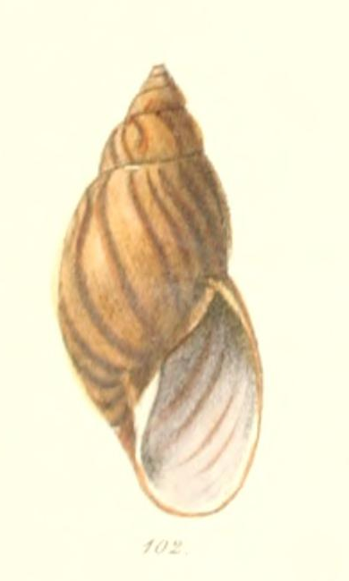
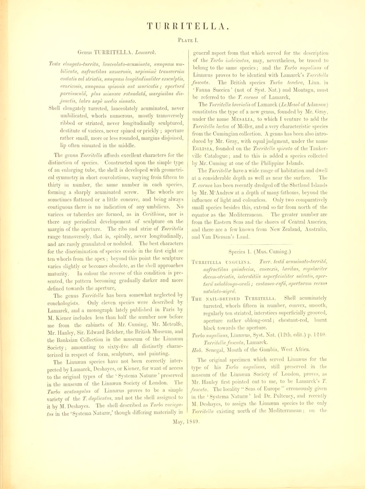
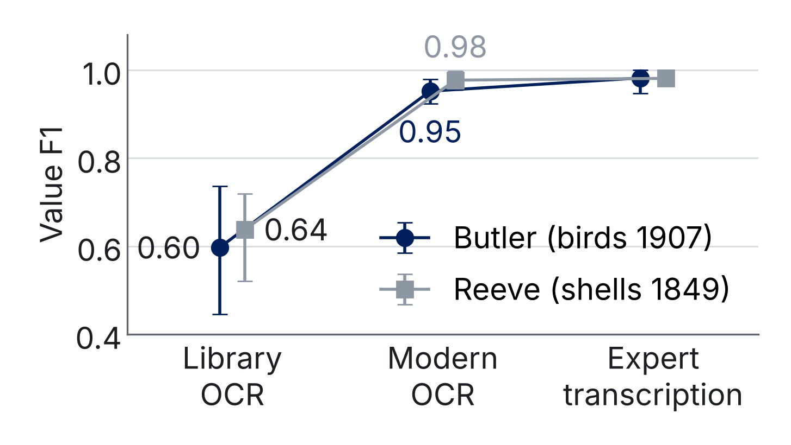
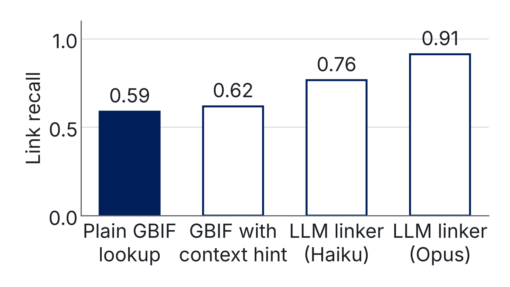

1 Motivation
Agents for science increasingly read the literature for us. The Biodiversity Heritage Library alone holds 64 million scanned pages. Before an agent can turn a page into a database record, five steps must hold: read, extract, ground, link, review. BioEvidenceBench measures where each one fails. It evaluates the steps an agent relies on; it is not itself an agent.


Figure 1. Reeve, Conchologia iconica (1849), BHL page 8966790, with the shell from plate XVII. An agent that quotes the OCR line faithfully still files the wrong species.
2 Methods
- Data. The study uses two English books: Reeve, shells (1849) and Butler, birds (1907); 16 held-out test pages.
- Three texts per page. Library OCR, modern OCR (dots.mocr) and expert transcription; the page stays the same.
- Agent task. Claude Opus 5.5 and Gemini 4 Carbon extract taxa, people, places, institutions and dates, returning a line number and a verbatim quote; code slices each value from the text.
- Reference. 607 mentions labelled by hand before any model output; a second labeller on 5 pages (agreement 0.90 exact, 0.95 overlap).
- Analysis. Value F1 per book with 95% page-bootstrap intervals; hypotheses and thresholds pre-registered, configuration frozen before the test pages ran.



Figure 2. Test material: Reeve (text page and plate XVII) and Butler. The evaluation design follows Lei, Docherty & Cooper [1]: label before seeing model output, compare with simple baselines.
3 Results: where evidence was lost
Figure 3. The agent's evidence chain on the test pages; red: evidence lost. Values: F1 library → modern OCR (Butler); F1 of four Claude models; names lost at lookup; library-OCR errors both models made. Quotes, a second model and self-repair check the agent against its own input, so they miss fluent errors; only an independent source (the scan, another OCR, the database, a person) catches them.

Figure 4. Same pages, three texts. Better OCR recovers most of the loss; expert transcription adds little (0.98 for both books). Bars: 95% page-bootstrap intervals.

Figure 5. 24 OCR versions of the same pages. Whether names survive OCR predicts F1; the page character error rate does not (ρ −0.11 and −0.61). Exploratory.

Figure 6. Linking 34 correctly read bird names (Butler, expert text). A plain lookup links 0.59 (pre-registered); an LLM linker reaches 0.91 (exploratory). Its misses are taxonomic judgement calls, so it still needs review.
4 Two failures an agent cannot see

Accepted today: Motacilla flava
Figure 7. Reeve page 8967281 and Butler page 8992647. Neither error shows in the text the agent quotes.
5 Work in progress: classical Chinese


| Text read | Names intact | Value F1 [95% CI] |
|---|---|---|
| Checked transcription | 100% | 0.98 [0.95, 0.99] |
| Claude Opus OCR | 88% (98%*) | 0.87 [0.83, 0.91] |
| PaddleOCR | 68% (81%*) | 0.72 [0.60, 0.83] |
Table 1. First extension of the method: Bencao gangmu 本草綱目 (1578), 18th-century manuscript copy. Six development pages only; an eight-page test set is frozen and not yet labelled. *If variant forms count. The model writes the modern character: right for search, wrong for the edition.
6 Conclusions
- Read: check that names survive OCR.
- Extract: a small model is enough; fix the input.
- Ground: make the agent quote its source.
- Link: test the database link on its own.
- Review: agreement between models is not evidence.
Limits: two English printed books and a six-page Chinese pilot. The same chain likely applies to materials papers (Fe₂O₃ read as Fe2O3; "TiO₂" without its phase), but this is untested.
- Lei, Docherty & Cooper (2024). Digital Discovery.
- FineBooks / IMPACT ground truth, finebooks/bhl-impact-gt, CC BY 3.0. Scans: BHL; Internet Archive; CADAL.

Preprint, data and every run
github.com/dekunsun/BioEvidenceBench